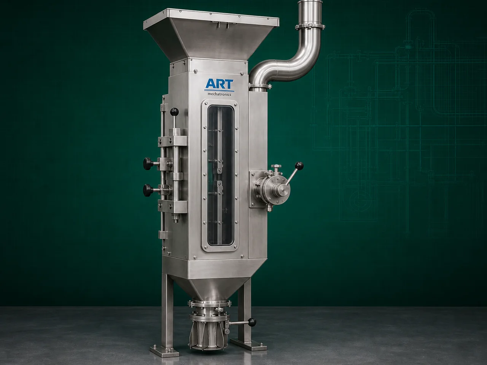

Air Aspirator Machine (Industrial Air Separation & Lightweight Impurity Removal System)
An Air Aspirator Machine, also known as an Industrial Air Aspirator or Air Separation System, is an essential industrial cleaning equipment designed for removing lightweight impurities such as dust, husk, chaff, straw, leaves, fine particles, and airborne contaminants from grains, seeds, pulses,…

About the Air Aspirator
The machine improves: ✔ Product purity ✔ Product quality ✔ Food safety ✔ Processing efficiency ✔ Equipment protection
Air aspirator machines are widely used in industries such as:
Grain processing plants
Flour mills
Rice mills
Seed processing industries
Pulses industries
Spice industries
Food processing plants
Agro product industries
where efficient lightweight impurity removal and dust separation are essential before further processing.
The machine operates using: ✔ Controlled airflow ✔ Suction systems ✔ Air velocity separation ✔ Density-based separation
to separate lighter impurities from heavier product materials.
Air aspirators are highly suitable for: ✔ Grain cleaning ✔ Seed cleaning ✔ Dust removal ✔ Husk separation ✔ Powder purification ✔ Agro product cleaning
ART Mechatronics offers high-performance air aspirator machines, engineered for efficient impurity separation, energy-efficient operation, hygienic processing, and reliable industrial performance.
Working Principle of Air Aspirator Machine
Grains, seeds, powders, spices, or agro products are fed into aspiration chamber
Blower or fan system generates controlled airflow inside machine
Creates air separation zone based on density and weight difference
Machine removes: ✔ Dust ✔ Husk ✔ Straw ✔ Chaff ✔ Leaves ✔ Fine lightweight particles from heavier product stream.
Heavier materials remain in main product flow Lighter impurities are carried away by airflow
Dust and lightweight waste collected separately using: Cyclone separator Dust collector Filter systems
Cleaned product discharged for further processing or packaging
Types of Air Aspirator Machines
- 1. Grain Air Aspirator Machine
Specially designed for: ✔ Wheat ✔ Rice ✔ Maize ✔ Grain cleaning applications
- 2. Seed Air Aspirator
Used for: ✔ Seed cleaning and grading
- 3. Vibro Air Aspirator
Combines: ✔ Vibratory screening ✔ Air aspiration technology for improved cleaning efficiency.
- 4. Pneumatic Air Aspirator
Uses: ✔ High-velocity pneumatic airflow for fine impurity separation.
- 5. Multi Stage Air Aspirator
Suitable for: ✔ High-capacity industrial cleaning plants
- 6. Integrated Air Aspiration System
Installed with: ✔ Pre cleaners ✔ Destoners ✔ Graders ✔ Pulverizers ✔ Screening systems
Industries Using Air Aspirator Machine
🌾 Grain Processing Industry Grain dust and husk removal 🌱 Seed Processing Industry Seed cleaning and lightweight impurity separation 🍚 Rice Mill Industry Paddy and rice cleaning 🍃 Pulses Industry Dal cleaning and purification 🌶️ Spice Industry Spice dust and husk separation 🍃 Food Processing Industry Powder and ingredient cleaning 🐄 Feed Industry Animal feed raw material cleaning
Features & Advantages
✔ Efficient lightweight impurity removal ✔ Improves product purity and quality ✔ Reduces dust contamination ✔ Continuous industrial operation ✔ Integrated dust collection compatibility ✔ Heavy-duty industrial construction ✔ Low maintenance requirement ✔ Energy-efficient operation ✔ Suitable for multiple agro and food products
Technical Highlights
Separation Technology: Airflow separation Pneumatic aspiration Density-based air classification Construction: Stainless Steel / Mild Steel Integrated Systems: Blower Cyclone separator Dust collector Capacity: Small to large industrial throughput Operation: Manual Semi-automatic Fully automatic PLC-based systems
Turnkey Air Aspiration Solutions
ART Mechatronics offers: Complete air aspiration systems Grain cleaning line integration Cyclone and dust collection systems Pneumatic conveying integration Installation & commissioning After-sales service & AMC
Why Choose Art Mechatronics
Expertise in industrial cleaning and air separation systems Customized aspiration solutions for multiple industries High-performance and durable machine construction Energy-efficient and reliable industrial designs Proven industrial performance across sectors
Applications
Grain Processing Plants Seed Processing Units Rice Mills Pulse Processing Industries Spice Manufacturing Facilities Food Processing Plants
Related Cleaning, Sorting & Grading machines
Get pricing & specs for the Air Aspirator
Share the product, target capacity, current process and plant location. These details help our engineers discuss the right machine or line configuration.
One partner, from design to start-up
ART Mechatronics designs, manufactures, installs and commissions your Air Aspirator solution with regional presence in India, UAE and Thailand.